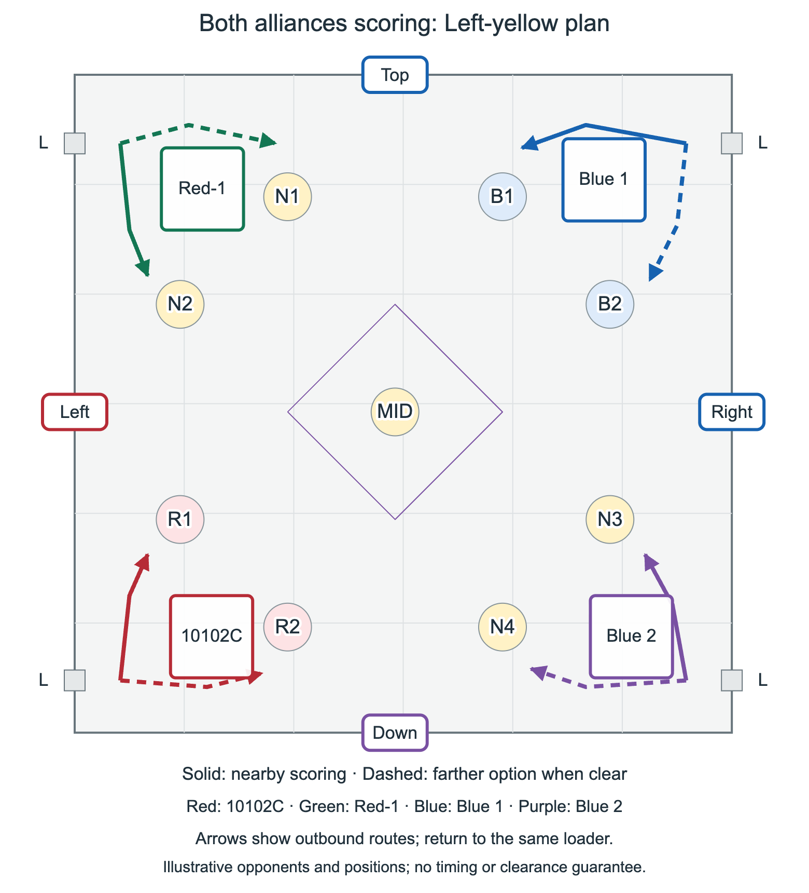
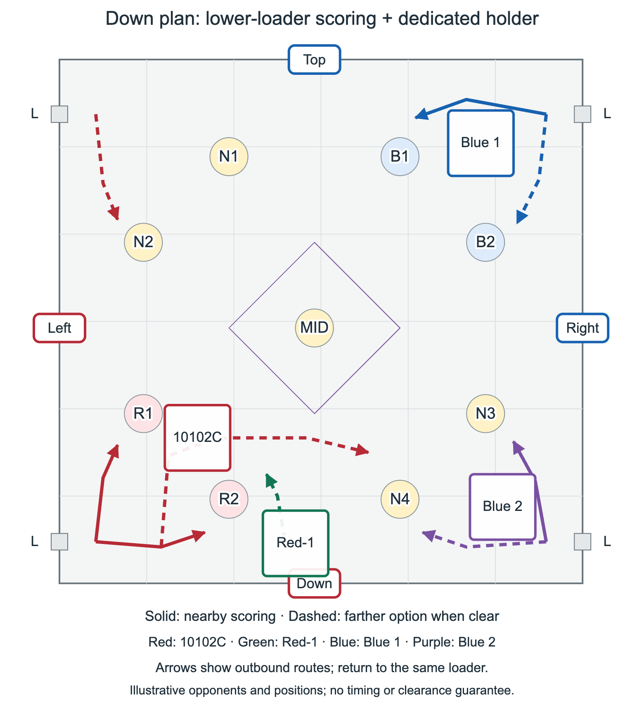
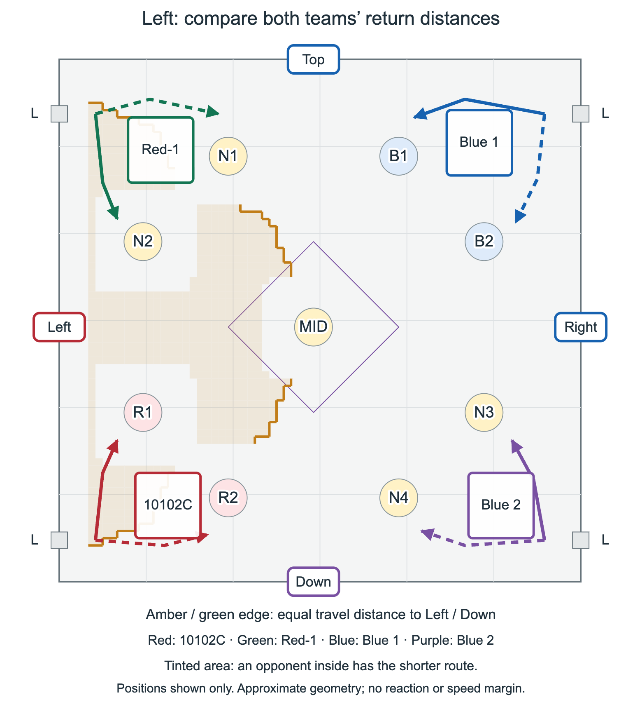
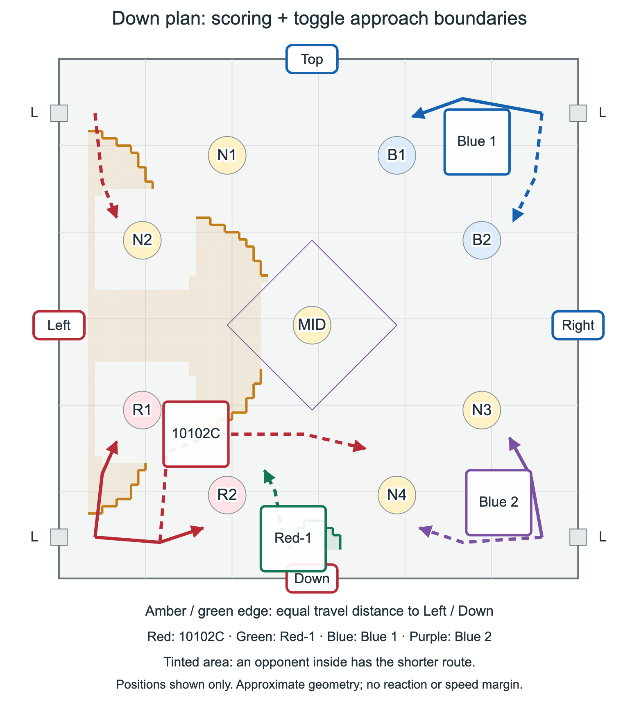

Agreed allocation; safety still to test
Prioritize filling or nearly filling R1 with yellows when yellow investment is needed. Do not routinely fill N2: its yellows cannot be knocked down as a fallback. The top robot uses the upper loader to score reds on N1, yellows on N2 as needed, or quick reds on N2 when the shorter cycle helps. N2 is not a mandatory prerequisite for moving to Down.
Both alliances scoring
The blue routes below are an illustrative opponent plan, not observed match behavior. Each robot has a nearby goal and a farther option. Red-1’s farther N1 route is its normal red-scoring destination; proximity alone does not choose pin color. Dashed routes require space, not an automatic trip every cycle. The diagrams show outbound paths; collection and return also consume time.

After Down is established
This is a separate branch, not the normal opening. 10102C mainly loads from the bottom and scores among R1, R2 and N4, while retaining Left responsibility. It may occasionally use the upper loader and score there, but that is not its main cycle. Red-1 mostly sits on Down and defends; any nearby scoring is an occasional opportunity, not a continuous second scoring route. Consider both blue robots changing from scoring to an attack at any point.

Distance boundaries: what the outlines mean
The amber outline compares an opponent’s route to Left with our assigned robot’s return route; green does the same for Down. An opponent outside the tinted region has farther to travel. On the edge, the distances are approximately equal. Once inside, the opponent has the shorter route. This is an exclusion boundary we want to keep an opponent outside, not a claim that an opponent inside is safely controlled. Retreat must begin before the edge if reaction, turning or finishing a placement costs time.


Method: shortest paths on a two-inch grid, with axis-aligned 18-inch square robots, schematic five-inch-radius goal obstacles, wall clearance and no diagonal corner cutting. Targets represent robot-center approach positions nine inches inward from each toggle. Obstacles and mechanism reach are approximations, not official collision dimensions. Other robots, acceleration, turning, handling time and pushing are excluded. Boundaries apply only to the pictured positions and must be recomputed as a scorer moves; no numerical safe buffer is established.
Assumption register
| Working assumption | Status | What could change it / how to test |
|---|---|---|
| Nearby scoring plus selective farther trips can keep the assigned toggle sufficiently safe. | Unverified; central question | Time loaded scoring, turn, return and interception against both opponents starting from different points in their cycles. Test the full 18-inch footprint, not just the centerline. |
| Our stronger scorer can make some southern trips while retaining Left responsibility. | Unverified; do not count as continuous coverage | Compare its recovery with blue’s fastest credible approach to Left, including blocked return lanes. If it fails, shorten the route or require a handover. |
| A defender may still score when neither opponent can threaten in time. | Conditional; no fixed partial-scorer credit | Record actual useful cycles under pressure; do not budget 1.25 or 1.5 scorers as a measured constant. |
| Offense usually remains productive against one defender. | Team expectation; matchup dependent | Try loader pressure, route changes and alternate pickups. Revisit if the completed robot or a new opponent can reliably shut a scorer down. |
| Current goal preference and useful stack height fit our mechanism. | Allocation agreed; execution unknown | Measure placement reliability, reach and cycle time at different heights. Revisit N2 yellow exposure with finish calculations. |
| Safe departure can be judged from visible space and remaining time. | Unmeasured | Test both-opponent attacks, acceleration, facing and full scoring-action commitment. Uncertainty means stay closer. |
Question for this review
Does the outlined opponent-approach boundary match where we would interrupt a scoring cycle and return? Which lower-loader cycle should 10102C avoid first as either blue robot approaches Left?
When to revisit
Review after the physical robot is drivable, after mechanism or drivetrain changes, after scrimmages expose a failed return, and when opponent designs or common strategies change. Record the tested positions, load, stack height, result and date. Promote only the tested conditions to established practice; keep the rest provisional.